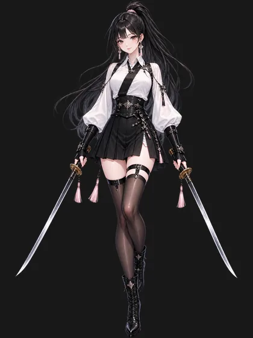
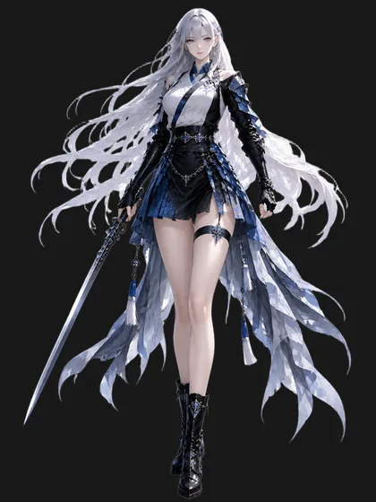
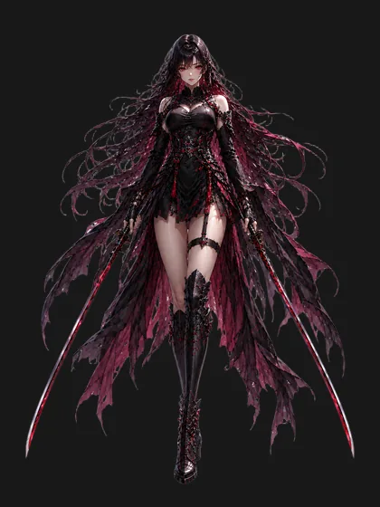
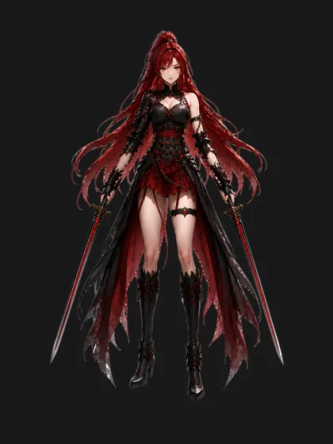

CHARACTER ASSET BROWSER
캐릭터
생성 이미지와 원본 레퍼런스를 캐릭터별로 확인합니다.

천류관
서하린
천류관 소속의 중립 계열 여검사. 흑장발과 오른쪽 눈 밑 작은 점이 특징.
등록 이미지 19개
천류관 설립자
전서율
흐름의 무공을 사용하는 비극적인 검사. 차갑고 고요한 존재감이 특징.
등록 이미지 3개
정파
설유진
은백색 장발과 푸른 눈, 흑청 계열 복장이 특징인 차분하고 고결한 검사.
등록 이미지 2개
사파
연무설
긴 흑발과 붉은 눈, 검붉은 복장으로 강한 카리스마를 지닌 검사.
등록 이미지 3개
마교
적월아
붉은 장발과 쌍검, 검붉은 의상이 특징인 강렬한 마교계 검사.
등록 이미지 4개